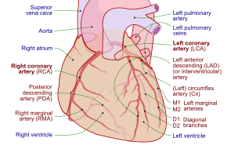

Three questions decide every scenario: how blocked the artery is, which wall died, and how long ago it happened. Answer those and the rest is ordering.
Nobody fails this topic because they cannot define a heart attack. They fail it on ordering, on timing, and on the one patient where the usual drug is the wrong drug.
Points get lost here in four predictable ways. Read them before anything else.
MONA spells a name. It does not rank anything. Aspirin is the drug that changes mortality and it sits fourth in the mnemonic. Oxygen sits second and most MI patients should not get it at all.
When a question asks what you do first, the mnemonic is actively working against you.
Troponin takes 2 to 4 hours to rise. A patient whose pain started 30 minutes ago can be having a large MI with a perfectly normal first draw.
A single negative troponin is a timestamp, not a verdict.
Right ventricular infarct patients live on preload. Nitroglycerin drops preload. Give it and the pressure falls off a cliff.
This is one of the few places in nursing school where the standard drug is the harmful one, which is exactly why it gets tested.
Women, older adults and people with diabetes often arrive without it. They arrive tired, nauseated, short of breath, or just not right.
If you are waiting for crushing chest pain, you will miss the patient the question is built around.
Acute coronary syndrome is a spectrum, not a diagnosis. For each point on it you should be able to say four things with the book closed: the one-sentence definition, the clue you would see in a patient, the priority action, and the first-line drug with its teaching point.
If you cannot say all four out loud, you do not know it yet. Familiarity is not recall.
| Type | Definition in one sentence | Clue in the scenario | Priority action | First-line drug |
|---|---|---|---|---|
| Unstable angina | Ischemia without cell death; the muscle is starved but nothing has died yet. | Chest pain at rest or worsening, troponin stays negative. | Serial troponins and serial EKGs; do not discharge on one set. | Aspirin, chewed. Anti-ischemic therapy after it. |
| NSTEMI | Partial occlusion that killed the inner layer of muscle. | ST depression or T wave inversion, troponin positive. | Urgent, not emergent. Anticoagulate and plan catheterisation. | Aspirin plus a P2Y12 inhibitor. Bleeding risk goes up with both. |
| STEMI | Complete occlusion killing muscle through the full wall thickness. | ST elevation in two or more neighbouring leads. | Activate the cath lab. Reperfusion is the whole plan. | Aspirin, chewed, then reperfusion by PCI or thrombolytics. |
| RV infarct | An inferior MI that took the right ventricle with it. | Hypotension, JVD, and lungs that are clear. | Give IV fluids. Withhold nitrates and diuretics. | Fluids first. Nitroglycerin here is the wrong answer. |
Four rows on one index card, by hand. Angina hurts and nothing dies. NSTEMI kills the inside layer. STEMI kills the whole wall. RV infarct needs volume, not nitro. That card is most of the exam.
An MI is a supply problem with a deadline. Blood flow to part of the myocardium stops, and the cells behind the blockage start dying. Everything you do is about that deadline.
The myocardium needs constant oxygen. When demand passes supply, ischemia starts.
Every treatment either raises supply or lowers demand. Oxygen and nitrates raise supply. Beta-blockers, rest and morphine lower demand. That is the whole pharmacology of this topic in one line.
The heart perfuses itself during diastole, not systole. Speed the heart up and diastole shortens first.
So a fast rate raises oxygen demand and cuts coronary supply at the same time. That is why rate control matters in a patient with chest pain.
Most MIs start with atherosclerosis and end with a clot. Five steps.
Notice what step 3 means. The plaque that kills is not always the biggest one. A modest plaque that ruptures beats a large stable one, which is why a patient with no history can arrest in the waiting room.
The damaged area is not uniform. It has a dead centre and a salvageable edge, and each zone writes its own mark on the EKG.
| Zone | What is happening | EKG change | Can you get it back |
|---|---|---|---|
| Ischemia, the outer ring | Reduced flow, cells still alive | T wave inversion | Yes, with reperfusion |
| Injury, the middle | Severely starved, cells dying now | ST elevation | Sometimes, if you are fast |
| Infarction, the centre | Necrotic, cells dead | Pathological Q waves | No. That muscle is gone |
This is the reason speed is the treatment. You cannot save the centre. You are fighting for the middle ring.
Every minute of occlusion costs myocardium. Two numbers hold the whole idea.
Discrimination axis: how much of the artery is blocked.
Unstable angina, NSTEMI and STEMI are the same disease at three depths. The scenario tells you the depth with two pieces of data: the ST segments and the troponin.
Priority: emergent reperfusion. PCI is preferred; thrombolytics if PCI is out of reach, within 12 hours of symptom onset.
Priority: urgent, not emergent. Anti-ischemic therapy, anticoagulation, catheterisation within 24 to 72 hours.
ST elevation means the artery is closed and the clock is running in minutes. No elevation means it is narrowed and the clock runs in hours.
Then troponin splits the bottom two. Negative troponin with ischemic pain is unstable angina. Positive troponin without ST elevation is NSTEMI. Same symptoms, different lab.
The classic picture is worth knowing because most scenarios still use it.
Women, older adults and people with diabetes often present atypically.
The exam question rarely says crushing chest pain for these patients. It says a 74 year old woman with diabetes feels tired and nauseated. Get the EKG.
Blank paper. Three rows: unstable angina, NSTEMI, STEMI. Two columns: ST segments and troponin. Fill all six cells from memory. That grid answers a surprising number of questions on its own.
Discrimination axis: is a negative troponin a negative patient.
Cardiac biomarkers are proteins that leak out of dying myocardial cells. They matter most when the EKG is unclear, which is often.
The trap in this section is not which marker. It is when.
| Biomarker | Starts rising | Peaks | Back to normal | What you use it for |
|---|---|---|---|---|
| Troponin I or T | 2 to 4 hours | 12 to 24 hours | 7 to 14 days | The gold standard. Most sensitive and most specific |
| High-sensitivity troponin | 1 to 3 hours | 12 to 24 hours | 7 to 14 days | Detects earlier, so it rules out faster |
| CK-MB | 4 to 6 hours | 18 to 24 hours | 2 to 3 days | Catches reinfarction, because it clears quickly |
| Myoglobin | 1 to 3 hours | 6 to 9 hours | 24 hours | Rises early but is not cardiac specific |
Troponin answers whether muscle died. CK-MB answers whether it died again. Troponin stays up for two weeks, so it cannot report a second event. CK-MB is back to baseline in two or three days, so a fresh rise means fresh damage.
That is the only reason CK-MB is still drawn.
A single troponin cannot rule out an MI. The level takes 2 to 4 hours to rise, so a patient one hour into their pain can have a normal result and a closing artery.
Serial troponins are drawn at arrival, at 3 to 6 hours, and sometimes at 12 hours. You are looking for a rise and fall pattern, not one number.
Treat what is in front of you while you wait. The EKG and the presentation do not need lab confirmation to start aspirin.
Discrimination axis: which artery closed, and what that predicts.
This section is one chain, and it runs in one direction. Leads tell you the wall. The wall tells you the artery. The artery tells you what goes wrong next.
Learn it as a chain and you stop memorising four separate tables.
| Leads with ST elevation | Wall | Artery | What you then watch for |
|---|---|---|---|
| V1, V2, V3, V4 | Anterior | LAD | Cardiogenic shock, heart failure, VT and VF |
| I, aVL, V5, V6 | Lateral | Circumflex, sometimes LAD | Papillary muscle dysfunction |
| II, III, aVF | Inferior | RCA, usually | Bradycardia, AV blocks, RV infarct |
| V7 to V9, with reciprocal depression in V1 to V3 | Posterior | RCA or circumflex | Usually travels with an inferior MI |
| V4R and right-sided leads | Right ventricle | Proximal RCA | Hypotension, JVD, clear lungs |
Each coronary artery supplies specific structures, and those structures are what fail.
| Artery | What it feeds | So an occlusion causes |
|---|---|---|
| Left anterior descending | Anterior left ventricle, septum, bundle branches | Anterior MI. The largest territory and the worst outlook |
| Left circumflex | Lateral and posterior left ventricle | Lateral or posterior MI |
| Right coronary | Right ventricle, inferior left ventricle, SA and AV nodes | Inferior MI, and the conduction problems that follow |
| Left main | Splits into the LAD and the circumflex | The widow maker. Massive infarct, often fatal |
The RCA row explains the whole inferior MI picture. It feeds the SA and AV nodes, so an inferior MI brings bradycardia and heart block. It feeds the right ventricle, so an inferior MI can take that with it.

| Finding | What it represents | When it shows up |
|---|---|---|
| ST elevation | Acute injury, infarction happening now | Minutes to hours after occlusion |
| ST depression | Ischemia, or reciprocal change from elevation elsewhere | Early. Seen in NSTEMI |
| T wave inversion | Ischemia, evolving or recent | Hours to days after the event |
| Pathological Q waves | Necrosis. Muscle that is gone | Hours to days, often permanent |
| Hyperacute T waves | Very early ischemia | The first minutes, and easily missed |
Discrimination axis: which one kills quickly and which one blocks the conduction.
If the MI is inferior, check right-sided leads. Up to a third of inferior MIs involve the right ventricle, and it changes your management completely.
The triad: hypotension, JVD, and clear lungs. Clear lungs is the finding that separates it from left-sided failure, because the left ventricle is still working.
Treatment: IV fluids. Withhold nitrates and diuretics. These patients are preload dependent, and both drugs take preload away.
Blank paper. Three rows: anterior, inferior, right ventricular. For each, write the leads, the artery, and the one complication you are watching for. Three by three, from memory, in under two minutes.
Thrombolytics dissolve the clot by activating plasminogen. They are the backup plan for STEMI, used when primary PCI cannot happen within 120 minutes.
Most questions here are not about how the drug works. They are about who you refuse to give it to, and what you do when the patient starts bleeding.
| Agent | What it is | How it is given |
|---|---|---|
| Alteplase, tPA | Tissue plasminogen activator | IV bolus, then infusion over 90 minutes |
| Reteplase, Retavase | Recombinant tPA | Two IV boluses, 30 minutes apart |
| Tenecteplase, TNKase | Modified tPA | One IV bolus, weight based |
| Absolute contraindications | Relative contraindications |
|---|---|
| Any prior intracranial hemorrhage | TIA within 3 months |
| Known cerebral vascular malformation or tumour | Currently on an oral anticoagulant |
| Ischemic stroke within 3 months | Pregnancy, or within 1 week postpartum |
| Suspected aortic dissection | Non-compressible vascular punctures |
| Active bleeding or a bleeding disorder | Traumatic CPR over 10 minutes, or major surgery within 3 weeks |
| Significant closed head or facial trauma within 3 months | Severe uncontrolled hypertension, systolic over 180 or diastolic over 110 |
The absolute contraindications share one theme: somewhere in this patient is a place that will bleed and cannot be compressed.
Intracranial hemorrhage happens in about 1 percent of patients given thrombolytics, and it is often fatal.
Stop the infusion and call the provider for any of these:
Stop first, then call. You do not need an order to stop an infusion that is causing harm.
Priority questions give you four defensible actions and ask which comes first. All four are things a nurse would do. That is the trick. You are being tested on ordering, not on correctness.
MONA-B lists morphine, oxygen, nitroglycerin, aspirin and beta-blockers. It is useful for remembering the set. It is misleading about the sequence.
Remember the letters. Do not follow them in order.
| Medication | What it does | What you check or watch |
|---|---|---|
| Aspirin | Antiplatelet, limits clot growth | 162 to 325 mg chewed. Allergy is the only thing that stops it |
| Nitroglycerin | Dilates coronaries, drops preload | Blood pressure before every dose. Hold if systolic is under 90 |
| Morphine | Pain relief, drops preload and anxiety | Respiratory status and pressure. Have naloxone available |
| Beta-blockers | Lower rate, pressure and oxygen demand | Bradycardia, hypotension, heart block. Held in cardiogenic shock |
| Heparin | Stops the clot extending | PTT, goal 1.5 to 2 times normal. Watch for bleeding |
| P2Y12 inhibitors | Antiplatelet, clopidogrel or ticagrelor | Given with aspirin as dual therapy. Bleeding risk rises |
| Statins | Stabilise plaque, lower lipids | High-intensity statin started within 24 hours |
The last one is easy to miss because you have to ask, and the patient may not volunteer it.
Discrimination axis: how long since the infarct.
Complications after an MI are not a random list. They arrive on a schedule, and the schedule is the answer to most complication questions.
First hour, electrical. First days, pump failure. Days three to seven, the tissue tears. Weeks later, the immune system.
| Arrhythmia | When | What you do |
|---|---|---|
| Ventricular fibrillation | First 4 hours. The leading cause of death | Defibrillate immediately, then ACLS |
| Ventricular tachycardia | First 24 to 48 hours | Sustained gets cardioversion. Non-sustained gets monitoring and antiarrhythmics |
| Sinus bradycardia | Inferior MI, a vagal response | Atropine if symptomatic, temporary pacing if it persists |
| AV blocks | Inferior MI, because the RCA feeds the AV node | Monitor, atropine, transcutaneous or transvenous pacing |
| Atrial fibrillation | Any time after the MI | Rate control, anticoagulation, treat the cause |
| Complication | Timing | How it shows up | Treatment |
|---|---|---|---|
| Cardiogenic shock | Hours to days | Hypotension, tachycardia, cold and clammy, low urine output, confusion | Inotropes, intra-aortic balloon pump, mechanical support |
| Papillary muscle rupture | 2 to 7 days | Sudden mitral regurgitation, new murmur, pulmonary edema | Emergency surgery |
| Ventricular septal rupture | 3 to 5 days | New harsh systolic murmur, rapid deterioration | Emergency surgery |
| Free wall rupture | 5 to 14 days | Sudden tamponade, PEA arrest | Usually fatal. Surgery if it is caught |
| Ventricular aneurysm | Weeks to months | Heart failure, arrhythmias, emboli | Anticoagulation, surgical repair |
Necrotic muscle is softest while the body is clearing it and before scar has formed. That is roughly days 3 to 7.
So a new murmur or a sudden crash on day four is a rupture until proven otherwise. Early on you are watching rhythm; midweek you are watching structure.
This is the most common cause of in-hospital death after MI. Recognise it early.
Both give post-MI chest pain. The axis is what changes the pain.
Pericarditis is pleuritic; it gets worse when the patient breathes in, and often better sitting forward. A friction rub seals it. Reinfarction pain is the original crushing pain returning, and it does not care about breathing.
These should be automatic. If you have to reason toward one of them, it is not learned yet.
| Number | Meaning |
|---|---|
| 10 minutes | EKG from arrival |
| Under 90 minutes | Door to balloon for PCI |
| Under 30 minutes | Door to needle for thrombolytics |
| 120 minutes | PCI further away than this, give thrombolytics instead |
| 12 hours | Outer window for thrombolytics from symptom onset |
| 2 to 4 hours | Troponin starts to rise |
| 12 to 24 hours | Troponin peaks |
| 7 to 14 days | Troponin back to normal |
| 162 to 325 mg | Aspirin dose, chewed |
| Under 90 mmHg | Systolic at which you hold nitroglycerin |
| Under 90 percent | Saturation below which you give oxygen |
| 24 to 48 hours | PDE5 inhibitor window that blocks nitroglycerin |
| 1 mm, two leads | ST elevation that counts as a STEMI |
| V1 to V4 | Anterior wall, LAD |
| II, III, aVF | Inferior wall, RCA |
| 3 to 7 days | Window when mechanical rupture happens |
Write these on the back of the index card from section 02. Test yourself on the meaning, not the number; the question gives you the number and asks what it means.
Reading this again will not move your score. Producing it will. Everything below is done with the page shut.
Pick any point on the spectrum. Without looking, say the one-sentence definition, the clue you would see in a patient, the priority action, and the first-line drug with its teaching point.
If you can do that for all four, you are ready. If you cannot, you know exactly which section to reopen.
8 questions with full rationales covering thrombolytic criteria, cardiac biomarkers, EKG localisation and post-MI complications. Choose Practice Mode for instant feedback or Exam Mode to simulate test conditions.
Time is muscle. Necrosis starts at 20 minutes. Door to balloon under 90.
STEMI = artery shut, ST elevated, reperfusion now.
One troponin proves nothing. The rise and fall is the diagnosis.
V1 to V4 = anterior = LAD = the largest territory.
tPA screening asks one thing: where might this patient bleed.
Aspirin chewed is the drug that changes mortality. Give it first.
RV infarct = hypotension, JVD, clear lungs. Fluids, not nitrates.
Hour one is VF. Days 3 to 7 are rupture. Time tells you what to watch.